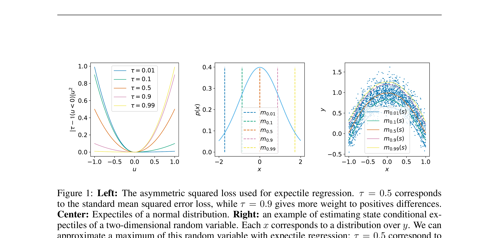

<!DOCTYPE html>

<html lang="zh-CN"><head><meta charset="utf-8"/><meta content="width=device-width,initial-scale=1" name="viewport"/>
<title>IQL · VLA+RL 详细精读</title><link href="../assets/css/style.css" rel="stylesheet"/>
<link href="https://cdn.jsdelivr.net/npm/katex@0.16/dist/katex.min.css" rel="stylesheet"/><script defer="" src="https://cdn.jsdelivr.net/npm/katex@0.16/dist/katex.min.js"></script><script defer="" onload="renderMathInElement(document.body,{delimiters:[{left:'$$',right:'$$',display:true},{left:'$',right:'$',display:false}]})" src="https://cdn.jsdelivr.net/npm/katex@0.16/dist/contrib/auto-render.min.js"></script>
<script src="../assets/js/theme.js"></script><script defer="" src="../assets/js/interactive.js"></script><style>.detail-list{color:var(--text2);line-height:1.8}.detail-list li{margin:.35rem 0}.evidence-table{width:100%;border-collapse:collapse;margin:14px 0 22px;font-size:13px}.evidence-table th,.evidence-table td{padding:10px 12px;border:1px solid var(--border);text-align:left;vertical-align:top}.evidence-table th{width:145px;color:var(--accent);font-family:var(--font-mono);background:var(--bg3)}@media(max-width:900px){.docs-sidebar-left{display:none!important}.evidence-table th{width:auto}}</style></head>
<body><nav class="nav"><a class="nav-logo" href="../index.html">Paper Notes</a><div class="nav-links"><a href="vla-rl-roadmap.html">← VLA+RL 路线</a><a href="https://arxiv.org/abs/2110.06169">arXiv</a><a href="../pdfs/vla-rl/iql.pdf">📄 PDF</a></div></nav>
<div class="page"><div class="docs-layout"><aside class="docs-sidebar-left"><div class="ds-title">IQL · 2021/2022</div><a class="ds-leaf-top" href="#introduction">§1 Introduction</a><a class="ds-leaf-top" href="#related-work">§2 Related Work</a><a class="ds-leaf-top" href="#question">§3 问题设定</a><a class="ds-leaf-top" href="#method">§4 方法总览</a><a class="ds-leaf-top" href="#mechanism">§5 机制细拆</a><a class="ds-leaf-top" href="#objective">§6 目标函数</a><a class="ds-leaf-top" href="#setup">§7 训练与评测</a><a class="ds-leaf-top" href="#evidence">§8 结果解读</a><a class="ds-leaf-top" href="#reproduce">§9 复现检查</a><a class="ds-leaf-top" href="#limits">§10 边界与启发</a></aside>
<main class="docs-content"><div class="docs-breadcrumb"><a href="../index.html">paper-notes</a><span class="sep">/</span><a href="vla-rl-roadmap.html">VLA+RL</a><span class="sep">/</span>IQL</div>
<h1>Offline Reinforcement Learning with Implicit Q-Learning</h1><p style="color:var(--text3);font-family:var(--font-mono);font-size:12px;margin-top:-12px">Kostrikov 等 · 2021/2022 · ICLR 2022 · arXiv:2110.06169 · Zotero E37AXX5B</p>
<div class="cn-read"><div class="cn-label">先给结论</div><p>IQL 不查询数据集外动作，而用上 expectile 从数据动作的 Q 分布中隐式逼近最好动作，再用优势加权行为克隆抽取策略。</p></div>
<h2 id="introduction">§1 Introduction：离线 RL 为什么最怕给未见动作估值</h2><div class="cn-read"><div class="cn-label">作者为什么做 IQL</div><p>离线 RL 希望只用既有数据学出优于行为策略的 policy，这对机器人很有吸引力：失败轨迹、旧策略数据和演示可以重复利用，不必承担在线探索风险。困难在于 Bellman backup 或 actor improvement 往往查询数据集外动作；Q 网络在这些动作上没有监督，稍微高估就会被策略反复放大。</p><p>IQL 的思路不是显式约束新策略接近 behavior，也不是学习 behavior model，而是完全避免对未见动作做 bootstrap。它用 expectile regression 从数据动作的 $Q(s,a)$ 拟合一个偏向高值的 $V(s)$，再仅用数据中的下一状态更新 Q；最后通过 advantage-weighted behavioral cloning 抽取 policy，让函数逼近器的泛化隐式组合高质量行为。</p></div><details class="en-quote"><summary>展开原文 · 核心原则</summary><div class="quote-body"><p>“never needs to evaluate actions outside of the dataset”</p><div class="quote-cite">— Abstract, PDF p.1</div></div></details><h2 id="related-work">§2 Related Work：保守 Q、行为约束与优势加权回归</h2><div class="cn-read"><div class="cn-label">IQL 为什么成为 VLA 离线 RL 基线</div><p>BCQ、BEAR 等用生成模型或分布距离限制策略动作，CQL 直接压低数据外 Q；它们显式处理 distribution shift，但约束强度会影响是否能超过 behavior。AWR/AWAC 用 advantage 对数据动作加权，更像稳定的加权模仿。IQL 将 expectile value learning 与 advantage-weighted extraction 组合，训练简单且不需要策略参与 critic backup。</p><p>迁移到 VLA 时，IQL 的价值是“critic 只信数据动作”，但也有结构错位：大 VLA 输出 action chunk 或 diffusion/flow 分布，而原始 IQL 假设普通 Markov 单步动作与可计算策略密度。CO-RFT、ARFM 等后续工作正是在 chunk 信用分配和生成式动作头上改造这套思想。</p></div><h2 id="question">§3 问题设定：SFT 到底漏掉了什么</h2><div class="cn-read"><div class="cn-label">这一节解决什么</div><p>VLA 预训练与 SFT 解决“从观测到动作的模仿”，但部署是闭环过程：动作会改变下一帧，错误会把策略带到演示没有覆盖的状态。离线 RL 想超过行为策略，却一评估未见动作就容易因分布外 Q 误差崩溃。</p></div>
<p>训练数据固定为 (s,a,r,s')。Q 只在数据动作上回归，V 用非对称 expectile 从 Q 分布中选择偏高但仍受数据支持的值。</p><details class="en-quote"><summary>展开原文 · 核心主张</summary><div class="quote-body"><p>“never needs to evaluate actions outside of the dataset”</p><div class="quote-cite">— Abstract, p.1</div></div></details>
<div class="module-grid"><div class="module-card"><div class="module-card-name">STATE / INPUT</div><div class="module-card-title">策略看见什么</div><div class="module-card-desc">训练数据固定为 (s,a,r,s')。Q 只在数据动作上回归，V 用非对称 expectile 从 Q 分布中选择偏高但仍受数据支持的值。</div></div><div class="module-card"><div class="module-card-name">FEEDBACK</div><div class="module-card-title">监督从哪里来</div><div class="module-card-desc">Bellman target 更新 Q；A=Q−V 只用于给行为克隆加权，不需要从当前策略采样数据外动作。</div></div></div>
<h2 id="method">§4 方法总览：反馈信号怎么走</h2><div class="cn-read"><div class="cn-label">承上启下</div><p>上一节明确了状态、动作与反馈，现在沿论文原图追踪训练信号。重点不是背模块名，而是判断：哪部分保持预训练先验，哪部分真的被 RL 改写。</p></div>
<div class="fig-interactive panel-below"><div class="fig-block"><div class="hotspot-wrap" data-hotspot-group="method-fig"><div class="hotspot" data-body="&lt;div class='hp-body'&gt;&lt;p&gt;&lt;strong&gt;这处在图里表示什么：&lt;/strong&gt;只对数据集动作拟合 Q 它对应逐步导览中的“1. 只对数据集动作拟合 Q”。&lt;/p&gt;&lt;p&gt;&lt;strong&gt;输入与实际操作：&lt;/strong&gt; 已经采集的专家演示、机器人交互轨迹或评测样本。每条数据通常包含观测、动作，以及可能存在的奖励或下一状态。 critic 只在离线数据真实出现的动作上拟合 Q，不对当前策略随意采样的 OOD 动作查询价值。这个限制直接针对离线 RL 的外推误差：没见过的动作不会因为函数逼近偶然高分就被选中。&lt;/p&gt;&lt;p&gt;&lt;strong&gt;输出、前后关系与必要性：&lt;/strong&gt; 一个分数、奖励或价值估计，用来比较候选，而不是直接控制机器人。这个结果会交给下一步“expectile 回归得到偏向高价值的 V”继续处理。 图中下一环节是“2. expectile 回归得到偏向高价值的 V”。 只有生成候选而没有评价标准，模型不知道哪个结果更好；这一步把‘好坏’变成可比较的学习信号。&lt;/p&gt;&lt;/div&gt;" data-id="s1" data-title="步骤 1" style="left:18%;top:42%"></div><div class="hotspot" data-body="&lt;div class='hp-body'&gt;&lt;p&gt;&lt;strong&gt;这处在图里表示什么：&lt;/strong&gt;expectile 回归得到偏向高价值的 V 它对应逐步导览中的“2. expectile 回归得到偏向高价值的 V”。&lt;/p&gt;&lt;p&gt;&lt;strong&gt;输入与实际操作：&lt;/strong&gt; 来自上一步“只对数据集动作拟合 Q”的产物：一个分数、奖励或价值估计，用来比较候选，而不是直接控制机器人。本步骤还会按论文设置读取当前条件、时间步或训练信号。 用 expectile regression 从 $Q(s,a)$ 拟合 $V(s)$，并让 $V$ 偏向数据中较高价值的动作。它像一个软最大值，但仍完全由数据支持，比显式求 $\max_a Q$ 更保守。&lt;/p&gt;&lt;p&gt;&lt;strong&gt;输出、前后关系与必要性：&lt;/strong&gt; 经过本步骤处理、含义更明确的中间结果。这个结果会交给下一步“用 Bellman backup 更新 Q”继续处理。 图中下一环节是“3. 用 Bellman backup 更新 Q”。 它承担上下两步之间的接口；缺少它，前一步产生的信息无法以正确格式或正确含义传到下一步。&lt;/p&gt;&lt;/div&gt;" data-id="s2" data-title="步骤 2" style="left:45%;top:42%"></div><div class="hotspot" data-body="&lt;div class='hp-body'&gt;&lt;p&gt;&lt;strong&gt;这处在图里表示什么：&lt;/strong&gt;用 Bellman backup 更新 Q 它对应逐步导览中的“3. 用 Bellman backup 更新 Q”。&lt;/p&gt;&lt;p&gt;&lt;strong&gt;输入与实际操作：&lt;/strong&gt; 来自上一步“expectile 回归得到偏向高价值的 V”的产物：经过本步骤处理、含义更明确的中间结果。本步骤还会按论文设置读取当前条件、时间步或训练信号。 Bellman backup 用奖励和下一状态的 $V$ 更新 Q。由于下一状态目标不需要从 learned policy 采 OOD 动作，critic 的 bootstrap 链比常规离线 Q-learning 更稳定。&lt;/p&gt;&lt;p&gt;&lt;strong&gt;输出、前后关系与必要性：&lt;/strong&gt; 一个分数、奖励或价值估计，用来比较候选，而不是直接控制机器人。这个结果会交给下一步“优势加权行为克隆提取策略并可继续在线微调”继续处理。 图中下一环节是“4. 优势加权行为克隆提取策略并可继续在线微调”。 只有生成候选而没有评价标准，模型不知道哪个结果更好；这一步把‘好坏’变成可比较的学习信号。&lt;/p&gt;&lt;/div&gt;" data-id="s3" data-title="步骤 3" style="left:76%;top:42%"></div><div class="hotspot" data-body="&lt;div class='hp-body'&gt;&lt;p&gt;&lt;strong&gt;这处在图里表示什么：&lt;/strong&gt;优势加权行为克隆提取策略并可继续在线微调 它对应逐步导览中的“4. 优势加权行为克隆提取策略并可继续在线微调”。&lt;/p&gt;&lt;p&gt;&lt;strong&gt;输入与实际操作：&lt;/strong&gt; 来自上一步“用 Bellman backup 更新 Q”的产物：一个分数、奖励或价值估计，用来比较候选，而不是直接控制机器人。本步骤还会按论文设置读取当前条件、时间步或训练信号。 最后用 $\exp(eta A)$ 加权行为克隆提取策略，高优势数据动作被更强模仿。若继续在线微调，新交互可自然加入数据集，而无需改变 IQL 的价值学习结构。&lt;/p&gt;&lt;p&gt;&lt;strong&gt;输出、前后关系与必要性：&lt;/strong&gt; 参数得到更新的模型，或能供下一轮训练使用的新监督信号。这是图中这条链路的最终产物，随后会进入真实执行、模型更新或指标评测。 图中下一环节是“后续执行或评测”。 前面的数据或分数本身不会自动改变模型；必须通过损失函数把误差信号变成参数更新。&lt;/p&gt;&lt;/div&gt;" data-id="s4" data-title="步骤 4" style="left:53%;top:70%"></div></div><div class="fig-cap"><span class="fig-num">论文原图 · 450 DPI 裁剪</span>IQL 的方法或关键分析图。<span class="fig-cn">点击热点，按训练信号顺序阅读。</span></div></div><div class="hotspot-panel"></div></div>
<div class="step-walker" data-hotspot-group="method-fig"><div class="sw-header"><div class="sw-title">跟着训练信号走一遍</div><div class="sw-controls"><button class="sw-btn prev">←</button><span class="sw-counter"></span><button class="sw-btn next">→</button></div></div><div class="sw-progress"><span class="sw-dot"></span><span class="sw-dot"></span><span class="sw-dot"></span><span class="sw-dot"></span></div><div class="sw-body"><div class="sw-step" data-hotspot="s1"><h4>1. 只对数据集动作拟合 Q</h4><p>critic 只在离线数据真实出现的动作上拟合 Q，不对当前策略随意采样的 OOD 动作查询价值。这个限制直接针对离线 RL 的外推误差：没见过的动作不会因为函数逼近偶然高分就被选中。</p><div class="step-beginner"><div class="sb-label">给第一次接触这个领域的读者</div><p><strong>输入是什么：</strong>已经采集的专家演示、机器人交互轨迹或评测样本。每条数据通常包含观测、动作，以及可能存在的奖励或下一状态。</p><p><strong>这一步究竟做什么：</strong>critic 只在离线数据真实出现的动作上拟合 Q，不对当前策略随意采样的 OOD 动作查询价值。这个限制直接针对离线 RL 的外推误差：没见过的动作不会因为函数逼近偶然高分就被选中。</p><p><strong>输出到哪里：</strong>一个分数、奖励或价值估计，用来比较候选，而不是直接控制机器人。这个结果会交给下一步“expectile 回归得到偏向高价值的 V”继续处理。</p><p><strong>为什么不能省略：</strong>只有生成候选而没有评价标准，模型不知道哪个结果更好；这一步把‘好坏’变成可比较的学习信号。</p><div class="sb-terms"><strong>术语先翻译：</strong>critic / Q：给‘在这个状态做这个动作’打长期价值分的模型；它负责评价，不直接驱动机器人；policy（策略）：把相机画面、指令和机器人状态映射成下一步动作的决策规则；RL（强化学习）：让模型试着行动，再根据成功、失败或奖励调整策略。</div></div></div><div class="sw-step" data-hotspot="s2"><h4>2. expectile 回归得到偏向高价值的 V</h4><p>用 expectile regression 从 $Q(s,a)$ 拟合 $V(s)$，并让 $V$ 偏向数据中较高价值的动作。它像一个软最大值，但仍完全由数据支持，比显式求 $\max_a Q$ 更保守。</p><div class="step-beginner"><div class="sb-label">给第一次接触这个领域的读者</div><p><strong>输入是什么：</strong>来自上一步“只对数据集动作拟合 Q”的产物：一个分数、奖励或价值估计，用来比较候选，而不是直接控制机器人。本步骤还会按论文设置读取当前条件、时间步或训练信号。</p><p><strong>这一步究竟做什么：</strong>用 expectile regression 从 $Q(s,a)$ 拟合 $V(s)$，并让 $V$ 偏向数据中较高价值的动作。它像一个软最大值，但仍完全由数据支持，比显式求 $\max_a Q$ 更保守。</p><p><strong>输出到哪里：</strong>经过本步骤处理、含义更明确的中间结果。这个结果会交给下一步“用 Bellman backup 更新 Q”继续处理。</p><p><strong>为什么不能省略：</strong>它承担上下两步之间的接口；缺少它，前一步产生的信息无法以正确格式或正确含义传到下一步。</p><div class="sb-terms"><strong>术语先翻译：</strong>critic / Q：给‘在这个状态做这个动作’打长期价值分的模型；它负责评价，不直接驱动机器人。</div></div></div><div class="sw-step" data-hotspot="s3"><h4>3. 用 Bellman backup 更新 Q</h4><p>Bellman backup 用奖励和下一状态的 $V$ 更新 Q。由于下一状态目标不需要从 learned policy 采 OOD 动作，critic 的 bootstrap 链比常规离线 Q-learning 更稳定。</p><div class="step-beginner"><div class="sb-label">给第一次接触这个领域的读者</div><p><strong>输入是什么：</strong>来自上一步“expectile 回归得到偏向高价值的 V”的产物：经过本步骤处理、含义更明确的中间结果。本步骤还会按论文设置读取当前条件、时间步或训练信号。</p><p><strong>这一步究竟做什么：</strong>Bellman backup 用奖励和下一状态的 $V$ 更新 Q。由于下一状态目标不需要从 learned policy 采 OOD 动作，critic 的 bootstrap 链比常规离线 Q-learning 更稳定。</p><p><strong>输出到哪里：</strong>一个分数、奖励或价值估计，用来比较候选，而不是直接控制机器人。这个结果会交给下一步“优势加权行为克隆提取策略并可继续在线微调”继续处理。</p><p><strong>为什么不能省略：</strong>只有生成候选而没有评价标准，模型不知道哪个结果更好；这一步把‘好坏’变成可比较的学习信号。</p><div class="sb-terms"><strong>术语先翻译：</strong>critic / Q：给‘在这个状态做这个动作’打长期价值分的模型；它负责评价，不直接驱动机器人；policy（策略）：把相机画面、指令和机器人状态映射成下一步动作的决策规则。</div></div></div><div class="sw-step" data-hotspot="s4"><h4>4. 优势加权行为克隆提取策略并可继续在线微调</h4><p>最后用 $\exp(eta A)$ 加权行为克隆提取策略，高优势数据动作被更强模仿。若继续在线微调，新交互可自然加入数据集，而无需改变 IQL 的价值学习结构。</p><div class="step-beginner"><div class="sb-label">给第一次接触这个领域的读者</div><p><strong>输入是什么：</strong>来自上一步“用 Bellman backup 更新 Q”的产物：一个分数、奖励或价值估计，用来比较候选，而不是直接控制机器人。本步骤还会按论文设置读取当前条件、时间步或训练信号。</p><p><strong>这一步究竟做什么：</strong>最后用 $\exp(eta A)$ 加权行为克隆提取策略，高优势数据动作被更强模仿。若继续在线微调，新交互可自然加入数据集，而无需改变 IQL 的价值学习结构。</p><p><strong>输出到哪里：</strong>参数得到更新的模型，或能供下一轮训练使用的新监督信号。这是图中这条链路的最终产物，随后会进入真实执行、模型更新或指标评测。</p><p><strong>为什么不能省略：</strong>前面的数据或分数本身不会自动改变模型；必须通过损失函数把误差信号变成参数更新。</p><div class="sb-terms"><strong>术语先翻译：</strong>policy（策略）：把相机画面、指令和机器人状态映射成下一步动作的决策规则；advantage（优势）：某个动作比当前平均选择好多少；正值表示更值得增加概率；IQL：避免对数据外动作直接取最大值的保守离线强化学习方法。</div></div></div></div></div>
<h2 id="mechanism">§5 机制细拆：动作、价值与更新边界</h2><div class="cn-read"><div class="cn-label">从架构图到实现</div><p>上图给出了宏观流程，但真正决定训练是否稳定的是三个接口：动作以什么粒度出现、反馈怎样变成可学习信号、哪些参数允许被更新。</p></div>
<div class="module-grid"><div class="module-card"><div class="module-card-name">ACTION UNIT</div><div class="module-card-title">动作表示</div><div class="module-card-desc">训练数据固定为 (s,a,r,s')。Q 只在数据动作上回归，V 用非对称 expectile 从 Q 分布中选择偏高但仍受数据支持的值。</div></div><div class="module-card"><div class="module-card-name">CREDIT</div><div class="module-card-title">信用分配</div><div class="module-card-desc">Bellman target 更新 Q；A=Q−V 只用于给行为克隆加权，不需要从当前策略采样数据外动作。</div></div><div class="module-card"><div class="module-card-name">UPDATE</div><div class="module-card-title">更新范围</div><div class="module-card-desc">交替优化 V、Q 与 advantage-weighted actor；离线完成后可把同一结构继续用于在线交互。</div></div><div class="module-card"><div class="module-card-name">WHY IT MATTERS</div><div class="module-card-title">与相邻方法的差别</div><div class="module-card-desc">CQL 显式压低 OOD Q，IQL 选择不查询 OOD；AWAC 同样优势加权，但 IQL 的 expectile V 是其离线稳定性的关键。</div></div></div>
<h2 id="objective">§6 目标函数：把直觉压缩成可检查的量</h2><div class="cn-read"><div class="cn-label">公式先讲人话</div><p>前一节说清了信号路径，这里把核心优化目标写成教学化公式。读公式时依次检查：回报影响谁、数据支持在哪里、预训练策略受到什么约束。</p></div>
<div class="math-block">$$L_V=\mathbb{E}_{(s,a)\sim D}[|\tau-\mathbf{1}_{Q-V&lt;0}|(Q(s,a)-V(s))^2]$$<span class="math-label">论文核心目标的教学化表达；精确实现以 PDF 对应章节为准</span></div><div class="math-explain"><div class="me-title">逐项拆解</div><dl><dt>$\tau$</dt><dd>expectile 水平，越大越偏向高价值动作</dd><dt>$Q-V$</dt><dd>数据动作相对状态价值的优势</dd><dt>$D$</dt><dd>固定离线数据集</dd></dl></div>
<div class="callout blue"><div class="callout-label">实现桥梁</div><p>交替优化 V、Q 与 advantage-weighted actor；离线完成后可把同一结构继续用于在线交互。</p></div>
<h2 id="setup">§7 训练与评测：数字是在什么条件下得到的</h2><div class="cn-read"><div class="cn-label">先固定比较口径</div><p>只看最终成功率会隐藏数据预算、仿真/真机差异和基座强弱。本节把论文的实验对象与比较关系放回同一张表。</p></div>
<table class="evidence-table"><tr><th>策略与动作</th><td>训练数据固定为 (s,a,r,s')。Q 只在数据动作上回归，V 用非对称 expectile 从 Q 分布中选择偏高但仍受数据支持的值。</td></tr><tr><th>训练反馈</th><td>Bellman target 更新 Q；A=Q−V 只用于给行为克隆加权，不需要从当前策略采样数据外动作。</td></tr><tr><th>更新方式</th><td>交替优化 V、Q 与 advantage-weighted actor；离线完成后可把同一结构继续用于在线交互。</td></tr><tr><th>实验覆盖</th><td>D4RL 的 MuJoCo locomotion、AntMaze、Franka Kitchen 与 Adroit 是主要基准；论文还测试离线初始化后 1M 在线步。</td></tr><tr><th>关键对照</th><td>CQL 显式压低 OOD Q，IQL 选择不查询 OOD；AWAC 同样优势加权，但 IQL 的 expectile V 是其离线稳定性的关键。</td></tr></table>
<h2 id="evidence">§8 结果怎么读：证据、因果与可迁移结论</h2><div class="cn-read"><div class="cn-label">论文实际支持什么</div><p>论文在 D4RL 上达到当时强结果，并展示离线初始化后继续在线微调的能力；它也是多篇 VLA 离线 RL 的基础。</p></div>
<p>CQL 显式压低 OOD Q，IQL 选择不查询 OOD；AWAC 同样优势加权，但 IQL 的 expectile V 是其离线稳定性的关键。</p><div class="callout blue"><div class="callout-label">路线定位</div><p>IQL 的价值在于把‘策略改进’藏进值函数回归，适合成为 VLA 离线 RL 的稳健起点。</p></div>
<div class="quiz" data-correct="c" data-explain="只有控制初始化、数据预算与闭环评测口径，才能把性能差异较可靠地归因于 RL 机制。" data-explain-wrong="单看最终成功率不能排除基座、数据量和评测条件差异。"><div class="q-label">理解检查 · 实验</div><div class="q-text">比较这篇方法与另一篇 VLA+RL 工作时，最先应该对齐什么？</div><div class="q-options"><button class="q-opt" data-k="a">论文发布日期</button><button class="q-opt" data-k="b">模型名称长度</button><button class="q-opt" data-k="c">基座、交互预算与闭环评测设置</button><button class="q-opt" data-k="d">作者单位数量</button></div><div class="q-feedback"></div></div>
<h2 id="reproduce">§9 复现与工程检查</h2><div class="cn-read"><div class="cn-label">从论文结论回到代码</div><p>前一节判断了证据强度，复现时还要把训练信号对齐、时间尺度和数据统计逐项落地，否则“同名算法”也可能得到完全不同的结果。</p></div>
<ul class="detail-list"><li>expectile τ 与 actor 温度 β 要分开调；确认 Q target 不含当前策略采样动作；不同数据质量应分别报告。</li><li>先跑通不加 RL 的预训练/SFT 基线，并保存逐任务成功率与失败视频。</li><li>同时记录环境步数、真实墙钟时间、人工介入次数、更新次数和推理延迟。</li><li>把奖励、终止、action chunk mask 与归一化统计做成可视化单元测试。</li></ul>
<h2 id="limits">§10 适用边界与研究启发</h2><div class="cn-read"><div class="cn-label">我的边界判断</div><p>IQL 的保守性来自数据支持而非魔法；数据中没有可泛化的好动作时，上 expectile 也无法凭空创造技能。</p></div><p>IQL 的价值在于把‘策略改进’藏进值函数回归，适合成为 VLA 离线 RL 的稳健起点。</p>
<div class="quiz" data-correct="b" data-explain="核心因果链是反馈信号如何改变策略，再如何改善闭环行为；‘使用 RL’本身不是解释。" data-explain-wrong="回到 §2–§4，找出被更新的模块和对应目标。"><div class="q-label">理解检查 · 方法</div><div class="q-text">读完这篇论文后，最应该能复述哪条链？</div><div class="q-options"><button class="q-opt" data-k="a">名字 → 参数量 → 发表年份</button><button class="q-opt" data-k="b">反馈 → 信用分配 → 参数更新 → 闭环证据</button><button class="q-opt" data-k="c">摘要 → 海报 → 项目视频</button><button class="q-opt" data-k="d">只背最终成功率</button></div><div class="q-feedback"></div></div>
</main></div></div></body></html>